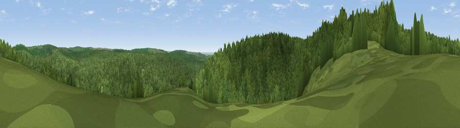

Viewpoint near Mile End
#36190 in England · top 75% of its area beats it · near Mile EndWhere it is
The exact computed spot (SO 60175 12425). Click the marker for map links.
The view, rendered

A 360° render of this exact spot computed from the terrain model, tree cover and land cover — summer colours, afternoon light, calibrated against photographs of famous viewpoints. Real trees, hedges and buildings will differ in detail.
The panorama
Grey silhouette: terrain skyline in each direction (720 bearings, Earth curvature and refraction included). Dashed green: skyline with trees (+15 m) and buildings (+8 m) as obstacles. Blue strip: how far the ground is visible on each bearing.
Where the view opens
Wedge length = distance to the farthest visible ground on that bearing (vegetation-aware). Rings at 10, 25 and 50 km.
What fills the view
98% woodland · 1% built-up ·
Angular shares of the visible panorama (visual magnitude), not map area. Landscape diversity 0.05 (0–1 Shannon).
Key numbers
More beautiful places nearby
The staircase of upgrades: each row has a higher view potential than everything closer. Driving times are estimates from straight-line distance, calibrated against real road routing — check an actual route before setting out.
| Place | Direction | Drive | Score |
|---|---|---|---|
| Viewpoint near Upper Lydbrook | NE · 3 km | ~7 min | 40.1 |
| Viewpoint near Upper Lydbrook | N · 3 km | ~7 min | 67.2 |
| Viewpoint near Ruardean | NNE · 6 km | ~12 min | 74.2 |
| Chase Wood Hill | N · 10 km | ~19 min | 77.6 |
| Viewpoint near Stinchcombe | SE · 19 km | ~33 min | 79.4 |
| Viewpoint near Stinchcombe | SE · 20 km | ~33 min | 80.5 |
| Garway Hill | NW · 21 km | ~35 min | 84.6 |
| Millennium Hill | NNE · 31 km | ~49 min | 86.9 |
51.80903, -2.57905 · source: screening · position refined by local search. Computed location — check access rights before visiting.